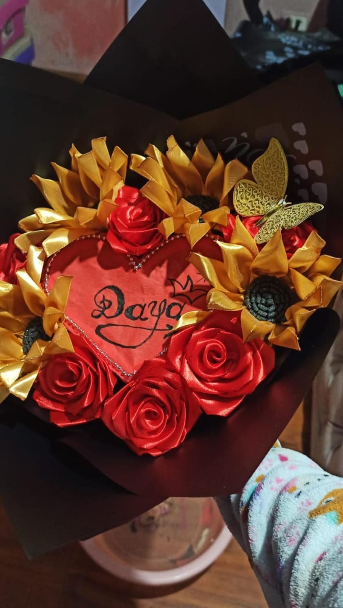

💖 Mi presentación
Hola 👋 soy Fernanda Tacuri y este es mi sitio de práctica. Aquà encontrarás mis ejercicios de HTML y CSS, diseñados con colores suaves, orden y amor por el detalle. 🌷 Espero que te guste mi trabajo.
✨ Un poco de mà ✨

🌺 Me gusta la música
🎨 Amo la fotografÃa

☕ Disfruto hacer manualidades